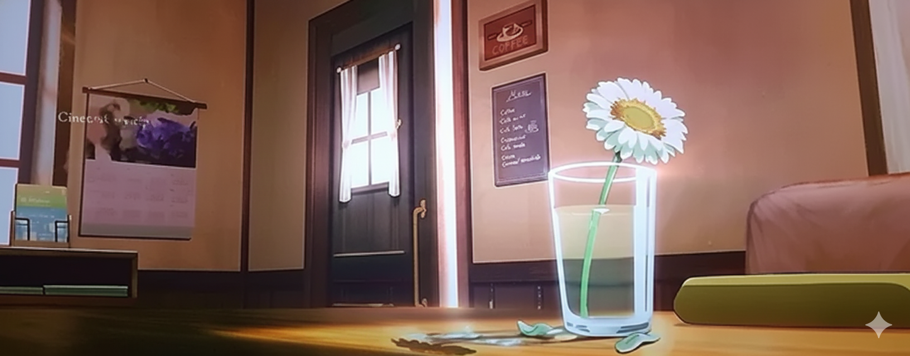

Nuestra Historia, Nuestro Compromiso
Más que Café, Es una Tradición Artesanal
En **El Grano Dorado**, somos guardianes de la calidad. Nuestra historia comenzó con una simple idea: llevar el **café de especialidad** más auténtico desde las fincas de origen hasta tu mesa. Seleccionamos cuidadosamente granos **100% arábica**, asegurando un **tueste lento y artesanal** que resalta los perfiles de sabor únicos de cada lote.
Pero no todo es café. Somos un oasis urbano donde el **ambiente acogedor** se une a una carta de **pasteles horneados diariamente** y sándwiches frescos. Ya sea para trabajar, desconectar o compartir un momento especial, "El Grano Dorado" es tu segundo hogar.
Ambiente del Local
El Viaje de Nuestro Café
- Cosecha Manual Selectiva
- Procesamiento y Fermentación
- Método Lavado: Sabor Limpio
- Método Natural: Mayor Dulzura
- Tueste Artesanal en Lotes Pequeños
- Empaque y Molienda a Demanda
Nuestros Compromisos
- Comercio Justo Directo
- Granos 100% Arábica de Alta Calidad
- Pastelería Horno-Fresco
- Ingredientes Locales
- Opciones Veganas y sin Gluten
Nuestros Granos de Origen y Perfil
Seleccionamos solo granos 100% arábica cultivados en las mejores regiones del mundo.
| Origen | Altura de Cultivo | Perfil de Sabor Dominante | Cuerpo / Acidez |
|---|---|---|---|
| **Colombia (Región Huila)** | 1,500 - 1,800 msnm | Chocolate, Caramelo, Notas Cítricas | Medio / Balanceada |
| **Etiopía (Yirgacheffe)** | 1,800 - 2,200 msnm | Floral (Jazmín), Frutos Rojos, Té Negro | Ligero / Vibrante y Alta |
| **Brasil (Región Cerrado)** | 900 - 1,200 msnm | Nuez, Cacao, Chocolate con Leche | Completo / Baja y Suave |
| *Los perfiles pueden variar ligeramente según el tueste aplicado en nuestro local. | |||